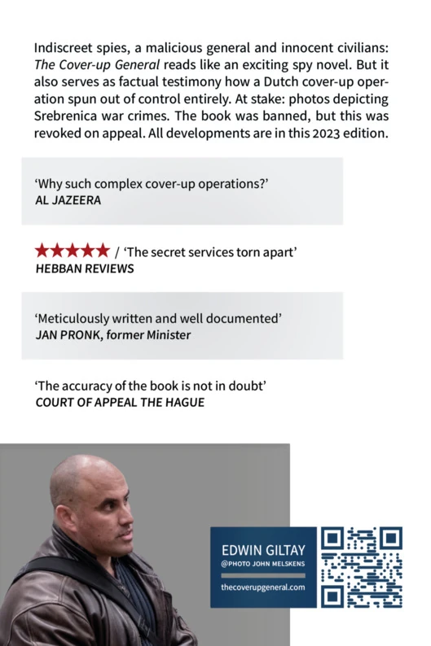

El único libro neerlandés que superó una prohibición total de publicación:
Ahora se puede descargar gratis en todo el mundo
Espías indiscretos, un general taimado y civiles inocentes: El general del encubrimiento se lee como una trepidante novela de espionaje. Pero es también un testimonio fáctico de cómo una operación neerlandesa de encubrimiento se descontroló. Lo que estaba en juego: fotos de crímenes de guerra en Srebrenica. El libro se prohibió, pero la prohibición se revocó en apelación. Todo ello se describe en esta edición inglesa.
Descárguela y compártala libremente, como modesto homenaje a la lucha contra la censura.

The Cover-up General
Autor: Edwin Giltay Revisión del texto inglés: Michael Wynne
La Haya, Países Bajos, 2025
292 páginas, con ilustraciones en color
Título neerlandés: De doofpotgeneraal
Este caso no es un capítulo cerrado. Ha recibido la atención de medios de todo el mundo y toca el núcleo de toda democracia que funcione:
•
Para la historia:
Las Madres de Srebrenica citaron el libro en su demanda contra el Estado neerlandés, como indicio de que el tristemente célebre rollo de película, con imágenes de crímenes de guerra, nunca salió mal y de que las fotos se retienen desde entonces. En ese caso, el Tribunal Supremo de los Países Bajos resolvió, por otros motivos, que el Estado es parcialmente responsable de la muerte de unos 350 hombres.
•
Para la libertad de prensa:
El Tribunal de Apelación rechazó las dudas sobre el rigor del autor. Con ello, El general del encubrimiento sentó un precedente poco común en todo el mundo: una prohibición total de un libro, revocada en apelación.
•
Para la responsabilidad del Estado:
El Estado habla con voces contradictorias. A la pregunta de si el libro es una noticia falsa o una teoría de la conspiración, la respuesta del Ministerio de Justicia fue, en la práctica, no: esa crítica no se basa «en modo alguno» en el contenido. Defensa lo despachó como un libro en el que, «en efecto, se mezclan hechos y ficción». La Comisión Permanente de Defensa de la Cámara de Representantes (Tweede Kamer) pidió por unanimidad una respuesta. Sobre el asunto de inteligencia, esa respuesta nunca llegó.
Estas 100 citas (también disponibles en PDF) ponen de relieve las irregularidades en torno a una operación de inteligencia en la que el secreto choca con la transparencia. Las voces arrojan luz sobre una lucha más amplia por la rendición de cuentas del Estado y confrontan a Defensa con su papel en el caso, que culminó en una victoria judicial sobre una prohibición de publicación y de hablar
(véase la sentencia de censura
ECLI:NL:RBDHA:2015:15050
y la sentencia de apelación
ECLI:NL:GHDHA:2016:870). Ese caso se refiere a un solo aspecto del expediente de Srebrenica: el tristemente célebre rollo de película.
Elija las citas clave o todas las citas. También puede filtrarlas por autor, año o país de la fuente.
Psiquiatrización indebida
De «inquebrantable» a «completamente loco»: cómo Defensa reduce al silencio a los denunciantes.
«Personalidad fuerte»
— drs. P. van der Pol, psicólogo de Defensa, rechaza a Edwin Giltay en un examen de selección por un carácter que los sargentos instructores no podrían doblegar (1998), una valoración que más tarde se revisó en documentos oficiales
— Frank de Grave, ministro de Defensa, sobre Edwin Giltay, que había denunciado irregularidades, en una posición oficial, firmada por su secretario general y nunca retirada (1999), en contradicción directa con la valoración anterior de un carácter fuerte
«Las cartas que nos envíe en adelante sobre la misma cuestión se archivarán sin más trámite».
— Reinier van Zutphen, Defensor del Pueblo de los Países Bajos (Nationale ombudsman), se niega a retirar el informe público de 1999 de su institución, en el que se recogió sin objeciones la declaración de locura de Giltay emitida por De Grave, aunque Giltay presenta numerosos documentos oficiales que refutan las acusaciones
«La psiquiatrización indebida de quien denuncia irregularidades es un fenómeno recurrente. Es una política, y la ministra de Defensa no toma medidas contra ello».
— Victor van Wulfen, piloto de caza al que Defensa también declaró falsamente loco
«No despedí a mi más alto funcionario. No sustituí a la cúpula. Es un dilema terrible. Ni siquiera en retrospectiva sé si actué con sensatez».
— Frank de Grave, exministro de Defensa, reflexiona en su autobiografía (2018) sobre su secretario general, que firmó en su nombre la declaración de locura de Giltay
«Defensa nunca se ha pronunciado en ese sentido sobre el señor Giltay».
— Ank Bijleveld, ministra de Defensa (2018), niega que el ministerio haya calificado alguna vez a Giltay de «completamente loco», mientras que esa calificación sigue publicada hasta hoy como posición del ministro en el informe 1999/507 del Defensor del Pueblo
La negación de la realidad por parte de Defensa: ¿qué es hecho y qué es ficción?
«Edwin Giltay habría sido despedido de Casema [empresa de cable e internet] al cabo de tres días por comportamiento irritante e inadaptado».
— Frank de Grave, ministro de Defensa, recoge en su posición oficial (1999) otra afirmación tomada exclusivamente del interrogatorio de Barbara Overduyn, una agente de inteligencia militar que trabajó brevemente en Casema
«Edwin Giltay ha desempeñado debidamente sus tareas como trabajador cedido por una empresa de trabajo temporal del 8 de junio al 23 de julio de 1998».
— Casema, certificado oficial (1999), en contradicción directa con la posición nunca retirada del ministro De Grave, consignada en el informe 1999/507 del Defensor del Pueblo
«Edwin Giltay ha trabajado para nosotros como vendedor telefónico del 8 de junio de 1998 al 27 de julio de 1998, a plena satisfacción del cliente».
— la empresa de trabajo temporal Randstad, recomendación (1999) sobre el trabajo temporal de Giltay: Randstad fue su empleador hasta la fecha de fin del contrato, de modo que Casema no podía despedirlo legalmente, en contradicción con la posición de De Grave
«[Sostuve] que Giltay habría sido despedido de Casema por un comportamiento militante inadaptado. [Esto] lo ha refutado entretanto Giltay por escrito aportando documentos».
— Barbara Overduyn, deja sin impugnar tras 17 años que Giltay refutó con pruebas su acusación de que lo habían despedido (2016)
«En el libro, en efecto, se mezclan hechos y ficción».
— Ank Bijleveld, ministra de Defensa (2018), sigue ignorando que Overduyn no impugnó la refutación, se niega a responder sobre el fondo y acusa públicamente a Giltay de tomarse libertades con los hechos
El «malogrado» rollo de película de Srebrenica: desaparecido sin dejar rastro en una red de intrigas y luchas internas.
«Tuve el privilegio de leer el manuscrito de Giltay y se me pusieron los pelos de punta. “Esto no te lo van a agradecer”, fue mi comentario, y: “¡Cuidado con las represalias!”. Me temo que en aquel entonces se mintió mucho en las altas esferas».
«En El general del encubrimiento ocupa un lugar central el conflicto entre dos bandos del Ministerio de Defensa neerlandés. Un bando quería destruir a toda costa el comprometedor rollo de película de Srebrenica, en el que habían quedado registrados crímenes, mientras que el otro quería hacerlo público».
— Radio-televizija Srbije, la radiotelevisión pública serbia
«El general del encubrimiento cita a una empleada del MID que en 1998 se quejó de la cultura del encubrimiento y dijo que el rollo de película no se había malogrado y que se retienen las fotos».
— Marco Gerritsen y Simon van der Sluijs, abogados de las Madres de Srebrenica, en su escrito de agravios contra el Estado neerlandés (2015), sobre Barbara Overduyn
«Cada vez que se extravía información oficial, todo el mundo exclama enseguida: “¿Lo ves?, igual que aquel rollo de película”. ¿Por qué no pueden las autoridades ser sencillamente transparentes? Es importante que también este enigma se resuelva de una vez por todas».
— Brenno de Winter, periodista de investigación, pide transparencia tras recibir el primer ejemplar
«Lo mejor habría sido hacer público el rollo de película de inmediato, con el mensaje de que no había forma de detenerlo. Esto es una farsa».
— antiguo portavoz principal de Defensa, en una conversación en casa de Giltay sobre el libro y el rollo de película, en presencia de un periodista (2020)
«Mucho más importante [que el rollo de película] es el fax extraviado con 239 nombres de hombres musulmanes».
— el profesor Joris Voorhoeve, exministro de Defensa y catedrático de relaciones internacionales, en una reacción al libro de Giltay, sobre otra prueba desaparecida de Srebrenica, lo que agrava aún más el fracaso
«Condena al demandado a abstenerse de toda difusión, publicación y/o reimpresión ulterior del libro “De doofpotgeneraal” [El general del encubrimiento] […] y a abstenerse de toda promoción ulterior […] en conferencias, presentaciones de libros y otras declaraciones públicas».
— el Tribunal de Distrito de La Haya (2015), impone silencio a Giltay cinco meses después de que las Madres de Srebrenica invocaran el libro como prueba contra el Estado neerlandés
— Barbara Overduyn, en un fax que demuestra de forma irrefutable que ella variaba la grafía de su propio apellido (1999); más tarde sostuvo que Giltay, que había tomado la grafía del MID, había escrito «mal» su apellido, lo que para la jueza fue uno de los motivos para prohibir el libro por completo
«Netherlands: Court bans book on Srebrenica genocide»
— Mapping Media Freedom, entonces la plataforma de alertas de Index on Censorship, la Federación Europea de Periodistas y Reporteros sin Fronteras, registra la prohibición bajo este titular como violación verificada de la libertad de prensa
«El tribunal neerlandés le ha prohibido expresamente vender y promocionar su libro o comunicarse con los medios, algo sin precedentes en la historia reciente del país de los tulipanes».
— Dnevni avaz, diario bosnio, sobre la prohibición del libro de Giltay (bajo apercibimiento de una multa coercitiva de 1000€ al día, hasta un máximo de 100 000€)
«El chilling effect que de ello se deriva es que los autores ya no se atreven a publicar por miedo a que quizá un solo pasaje pueda dar lugar a una resolución en la que se prohíba un libro entero. Giltay incluso ha tenido que desactivar por completo su sitio web».
— Boekx Advocaten, en la apelación de Giltay contra la prohibición
La prohibición levantada: el Tribunal de Apelación no ve motivo para dudar del rigor de Giltay.
«En el verano de 1998, cuando yo trabajaba en Casema, Barbara Overduin me ordenó que dejara de relacionarme con Edwin Giltay. Sus antecedentes eran tan malos que, según Overduin, él no se atrevería a contármelos».
— colega de Casema y amigo de Giltay (1999), atestigua que Overduyn sembró dudas sobre los antecedentes de este, un proceder que presenta las características de una medida de desestabilización
«Atendiendo a su solicitud, le concedo la baja honrosa con efectos desde el 1 de enero de 1998».
— Henk van Hoof, secretario de Estado de Defensa, da de baja el 3 de noviembre de 1998, con efecto retroactivo al 1 de enero de 1998, a Barbara Overduyn, que se había infiltrado en Casema en junio de 1998, y con ese plumazo parece lavarse las manos respecto de la operación
«Assistant department Intell MIVD, Department of Defence: mayo de 1995 – diciembre de 1998»
— Barbara Overduyn, en su perfil de LinkedIn (un perfil conmemorativo desde su fallecimiento en 2024), en el que se presentaba abiertamente como empleada de lo que era, de hecho, el departamento de espionaje del MID / MIVD
«Estuve presente en el juicio. La señora del MID no aportó ni la más mínima prueba de su afirmación de que lo que Giltay escribe sobre ella es pura invención».
«A diferencia de la jueza de medidas provisionales, el Tribunal de Apelación considera que estas inexactitudes tampoco bastan para poner en duda el rigor con el que Giltay procedió al escribir el libro. […] Desestima la prohibición solicitada».
— el Tribunal de Apelación de La Haya, levanta tanto la prohibición del libro como la de hablar: una sentencia única (2016)
«Declara que el Estado ha actuado de forma ilícita […] al facilitar […] la separación de los [unos 350] refugiados varones por parte de los serbios de Bosnia»
— el Tribunal de Apelación de La Haya, atribuye al Estado un 30% de responsabilidad en el caso de las Madres (2017); el libro sirvió de prueba en el escrito de agravios
La política interviene: la Comisión Permanente de Defensa pide por unanimidad una respuesta a la ministra.
«Una vez más, la realidad resulta más insólita que la mayor de las teorías de la conspiración. El libro demuestra que realmente todo es posible, también en los Países Bajos, incluidas las amenazas».
— Willem Middelkoop, autor de éxitos de ventas internacionales y periodista, sobre las medidas de desestabilización que expone el libro, como la intimidación psicológica por parte de los servicios de inteligencia
«¡Recomendación de lectura! El libro sobre el uso de agentes secretos y el rollo de película del Dutchbat III fue prohibido en un primer momento por el tribunal, pero ahora ha sido autorizado, para que todos puedan leer lo que sucede en los Países Bajos».
— la Asociación Dutchbat III, la organización de veteranos de los soldados neerlandeses que estuvieron en Srebrenica
«¿Es Kafka? Me gustaría que algún día se abriera todo el libro de Srebrenica. Si entonces el Gobierno actuara también con transparencia sobre esta historia, sería un bonito extra».
— Hans Laroes, antiguo redactor jefe del NOS Journaal (el telediario público neerlandés), en su epílogo al libro
«El señor Giltay ha escrito un libro impresionante sobre sus experiencias. Muchos diputados consideran, como yo, que la ministra de Defensa le debe una verdadera respuesta».
— Sadet Karabulut, diputada (2017), antes de la decisión unánime de la Comisión Permanente de Defensa de pedir una respuesta a la ministra
«A petición de Su Majestad la Reina, le comunico que la Reina ha recibido su carta del 14 de octubre del corriente y la ha puesto en manos del ministro del Interior y de Relaciones del Reino para su tramitación».
— el Gabinete de la Reina (31 de octubre de 2000), da curso a la gestión de Giltay ante la jefa del Estado, un día después de que De Grave intentara acallarlo
«La primera queja fue declarada infundada tras una investigación de la Comisión de Supervisión de los Servicios de Inteligencia y Seguridad».
— Jeanine Hennis-Plasschaert, ministra de Defensa, rechaza la solicitud de rehabilitación de Giltay (2017), alegando una supuesta investigación de la CTIVD y un informe del Defensor del Pueblo que el Tribunal de Apelación de La Haya desvirtuó en 2016
«La comisión de supervisión CTIVD no ha tramitado ninguna queja suya contra el MIVD. Por ese motivo, tampoco hay ningún informe de la CTIVD».
— el general Onno Eichelsheim, director del MIVD y hoy jefe de Estado Mayor de la Defensa, niega la existencia de la investigación de la CTIVD tras la que se escuda su ministra (2017)
«Este libro se caracteriza por su estilo de fácil lectura. […] El NIOD calificó de improbable la teoría sobre el rollo de película, y no está claro qué quiere decir el autor con “psiquiatrizar”».
— el doctor Klaas Dijkhoff, ministro interino de Defensa, critica el libro en una carta de 2017 a la Cámara de Representantes (Tweede Kamer), mientras que el Tribunal de Apelación de La Haya no había puesto en duda, precisamente, el rigor del autor
«Las clasificaciones [propaganda, noticias falsas, teorías de la conspiración] no están en modo alguno basadas en el contenido del libro. El término “peligroso para el Estado” no es aplicable».
— el doctor Ferdinand Grapperhaus, ministro de Justicia (2021), en dos confirmaciones de una misma carta que, de hecho, vienen a decir que la crítica no es aplicable a El general del encubrimiento
«Espías, secretos de Estado, grabaciones de video comprometedoras: estos son algunos de los elementos del thriller épico El general del encubrimiento».
— Vagón de libros, comunidad rusa de lectores en VKontakte, alude a las intrigas de espionaje del libro (que también relata operaciones de señuelo)
«Trabajo temporal, mandos chapuceros, controles que fallan y, como remate, los servicios de inteligencia del país: son los ingredientes de este thriller de true crime».
— Nieuwe Revu, semanario de opinión neerlandés, en una reseña de cuatro estrellas
«Al parecer, los espías están acostumbrados a tomarse libertades con la realidad y a maquillarla».
— el coronel retirado Charlef Brantz, antiguo comandante interino de sector de la ONU que supervisaba al Dutchbat III, sobre la obstrucción a Giltay por parte de Barbara Overduyn
«Un antiguo empleado de Casema revela actividades de espionaje del servicio de inteligencia militar dirigidas a ocultar pruebas de crímenes de guerra en la antigua Yugoslavia».
— la Biblioteca Real, biblioteca nacional de los Países Bajos, en el registro de catálogo de De doofpotgeneraal que clasifica el libro como no ficción
Del profesor a la prensa: elogios a un relato preciso de un caso de extrema gravedad.
«Descrito minuciosamente y bien documentado».
— el profesor Jan Pronk, exministro de Cooperación al Desarrollo y diplomático de la ONU, que asumió la responsabilidad política del fracaso de la misión neerlandesa de las Naciones Unidas en Srebrenica, y que ya recomendó el libro antes de su publicación
«No cabe duda de que El general del encubrimiento constituye una base importante para documentar el genocidio en Bosnia».
— el profesor Mohamed Alsiadi, especialista en genocidio y derechos humanos de la Universidad Rutgers, en Estados Unidos, reconoce el valor de las revelaciones neerlandesas sobre Srebrenica (2025)
«Se lee como una novela en clave apasionante y muy detallada en la que se revelan los nombres reales».
— Checkpoint, la revista mensual para veteranos publicada con el apoyo del Ministerio de Defensa, reseña el libro y organiza un sorteo entre sus lectores, mientras el ministerio se niega a pronunciarse sobre las acusaciones
«Recomendable para todo aquel que quiera echar un vistazo entre bastidores al espionaje gubernamental en la práctica y a los peligros que entraña para todos los implicados».
— NBD Biblion, en una reseña para las bibliotecas neerlandesas, tras la cual bibliotecas públicas de todo el país adquieren el libro
«¡Se me abre un mundo! El libro me hizo reflexionar: ¿quién es en realidad mi general del encubrimiento, o debería decir “secretario general del encubrimiento”?».
— Roelie Post, denunciante en la Comisión Europea, reconoce el mismo patrón de encubrimiento a escala de la UE
«Srebrenica sigue suscitando controversia hoy en día. Un libro neerlandés prohibido hace 10 años arroja luz sobre otras dimensiones del caso. ¿Cuál es su historia?».
— Al Jazeera Documentary, con un carrusel fotográfico sobre el caso de espionaje, las fotos desaparecidas y la prohibición del libro revocada por el Tribunal de Apelación (2025)
Cómo la historia de Giltay encuentra eco en todo el mundo, de Sarajevo a La Haya.
«Toma, te doy una flor de Srebrenica».
— Munira Subašić, presidenta de las Madres de Srebrenica, superviviente emblemática y activista por la justicia, entrega al autor Edwin Giltay una roseta conmemorativa del genocidio (2017)
🇧🇦 Fuente:dedoofpotgeneraal.nl/doc/subasic.pdf (encuentro personal con Subašić en el Palacio de Justicia de La Haya, 27 de junio de 2017, con interpretación de la periodista Naida Ribić)
«Quiero leer El general del encubrimiento en inglés».
— Ćamil Duraković, superviviente del genocidio de Srebrenica y vicepresidente de la República Srpska de 2022 a 2026, pide una traducción tras la conmemoración de Srebrenica de 2017, de ahí la edición inglesa, disponible gratuitamente en todo el mundo
«Muchas gracias. Me gustaría que hubiera una traducción al bosnio».
— Mirsada Čolaković, embajadora de Bosnia y Herzegovina, pide una traducción del libro al bosnio para su país durante un encuentro en su embajada en La Haya (2018)
«Giltay se encontró en el centro de un escándalo en el que el servicio de inteligencia militar intentó ocultar la existencia de unas fotografías, y en parte lo consiguió. A raíz de la revelación del “caso”, el libro fue prohibido y Giltay quedó en el punto de mira de los servicios de inteligencia».
— Al Jazeera Balkans, en una extensa entrevista (2018)
«Giltay responde también a la pregunta: ¿quién es el general que mantiene este encubrimiento? Dados los procesos judiciales e investigaciones que están ahora en curso a raíz del drama de Srebrenica, este libro es sin duda alguna de actualidad».
— Onafhankelijke Defensiebond, sindicato militar neerlandés, apoya el libro mientras Defensa guarda silencio
«Te felicito y quiero agradecerte que hayas escrito y publicado tu importante libro».
— Hasan Nuhanović, superviviente del genocidio de Srebrenica, en el que perdió a sus padres y a su hermano, y autor de Under the UN Flag, felicita a Giltay por la publicación del libro en inglés (2025)
De la caja fuerte secreta al triunfo repetido: cómo se llamó al orden al Defensor del Pueblo.
«Es un expediente secreto en la caja fuerte. Si diéramos más información, en mi opinión tendríamos que pedir su parecer a Defensa».
— el Defensor del Pueblo, en una nota interna que revela tanto el carácter secreto del expediente de Giltay como la intervención del Ministerio de Defensa en su divulgación
«Así pues, la decisión impugnada adolece de una ilicitud manifiesta. [El Defensor del Pueblo] tendrá que resolver aún sobre la solicitud Woo [Ley neerlandesa de Acceso Público a la Información]».
— el Tribunal de Distrito de La Haya, que resuelve a favor de Giltay en su batalla jurídica contra la obstrucción del Estado a una solicitud de documentos de la Administración (2023)
«Declara fundado el recurso contra la falta de decisión en plazo sobre la solicitud»
— el Tribunal de Distrito de La Haya, que impone una multa coercitiva de 100€ por día en la segunda victoria consecutiva de Giltay sobre el Defensor del Pueblo (2023), la misma institución que mantiene en línea, sin modificar, su desacreditado informe de 1999
«Multa coercitiva por retraso | decisión Woo | 19 días a 100,00€ son
1900,00€»
— ING Bank, extracto (2024) que confirma el pago de la multa coercitiva a Giltay por parte del Defensor del Pueblo, resultado tangible de la resolución judicial sobre el retraso
«El general del encubrimiento lo he leído entero con gran placer durante las vacaciones de Navidad. ¡Mis felicitaciones por la muy extensa documentación de base y por el nivel de detalle del relato!».
— Karin Vaalburg, asesora jurídica sénior del Defensor del Pueblo, elogia la documentación del libro en un intercambio de correos electrónicos (2024), pero cancela una reunión prevista
«El general del encubrimiento es un ejemplo muy raro en nuestra colección de un autor que impugnó con éxito la prohibición de un libro».
— el Banned Books Museum de Tallin, en la presentación de la traducción inglesa en PDF gratuito para todo el mundo (2024), financiada con las multas coercitivas que pagó el Defensor del Pueblo
«[Que] el libro ha tenido impacto social, ha suscitado debate y ha desempeñado un papel en el procedimiento que condujo a la sentencia del Tribunal Supremo»
— la Cámara de Representantes (Tweede Kamer, 2026), reconoce a través del Servicio de Asuntos Jurídicos el papel del libro en el caso de las Madres, al denegar la solicitud Woo de Giltay
«Los documentos que revelaron los gastos jurídicos [más de 2,6 millones de euros en los casos de Srebrenica] se publicaron tras una solicitud de acceso a la información del periodista Edwin Giltay, que escribió un libro sobre cómo el Estado neerlandés intentó ocultar información sobre su papel en Srebrenica».
— Balkan Insight, portal de noticias de los Balcanes en inglés
«Prefieren mantenerlo todo en secreto, no vaya a ser que lleguen las reclamaciones de indemnización. Ni la justicia ni la verdad son relevantes para ellos».
«Defensa no tiene nada más que opinar al respecto».
— Ank Bijleveld, ministra de Defensa (2018), en respuesta a preguntas de los medios sobre la sentencia del Tribunal de Apelación de La Haya, que levantó la prohibición del libro y no puso en duda el rigor del autor
— la jueza Solomy Balungi Bossa, de la Corte Penal Internacional, invitada principal en un debate público, en respuesta a la pregunta del autor sobre qué piensa de quienes encubren pruebas de crímenes de guerra (2026)
Estrellas y elogios: cómo valoran los reseñistas este relato revelador.
★★★★★
«Es casi asfixiante leer cómo los servicios de inteligencia se confabulan para amargarles la vida a ciudadanos inocentes. Un encubrimiento así hay que sofocarlo».
— Boekje Pienter, guía de lectura militar, en una reseña de cinco estrellas
«Encubrimientos, censuras y la sombra de un genocidio quizá evitable […]. Están todos los ingredientes de un thriller, si no fuera porque el autor, Edwin Giltay, no ha tenido que inventar nada».
«Altos cargos intentan lavar su imagen, pero su propia torpeza los pone en la picota. Si no fuera un asunto de suma gravedad, el lector podría tomarlo por una broma magistral. Cualquier grupo de scouts lo haría probablemente mejor».
★★★★★
«Edwin Giltay describe lo mal que están nuestros servicios de inteligencia, encubiertos por Defensa, el Defensor del Pueblo y con ministros desprestigiados en su estela. No haber recibido datos correctos no los exime del deber de buscar seriamente la verdad».
— Hebban, la mayor comunidad de lectores de los Países Bajos
«Uno pensaría que es una mala broma, pero ocurrió de verdad. […] Con un estilo sobrio y atento al detalle, Edwin Giltay describe en El general del encubrimiento la torpe actuación de dos espías maleducados de la que fue testigo».
— Haarlems Weekblad, semanario neerlandés, se asombra de lo que ocurrió en realidad
«Como si el Servicio de Inteligencia Militar no se hubiera ganado ya por sí mismo su mala fama con todas las mentiras y evasivas en torno, por ejemplo, al rollo de película. En lugar de ofrecer por fin total transparencia sobre lo que ocurrió allí entonces, se preocupan por un libro».
— Thrillerlezersblog, blog literario neerlandés, denuncia unas prioridades invertidas
Periodistas, expertos, un antiguo político y un chatbot reconocen el patrón.
«Edwin Giltay es un ciudadano corriente, pero aun así se vio implicado de forma indirecta en el escándalo. Aquello no lo dejó en paz, y escribió sobre ello el libro El general del encubrimiento».
— EenVandaag, programa de actualidad de la emisora pública neerlandesa
«Y, sin embargo, lo más admirable de ti es que no te has rendido. Eso te hace valiente».
— Philip Dröge, autor de éxitos de ventas y periodista de investigación, al recibir la segunda edición revisada (2016), sobre la perseverancia de Giltay, palabras que resultan amargas a la luz de la prohibición de hablar de sus propias vivencias
«Estaría bien que una parte externa e independiente examinara a fondo de una vez TODAS las investigaciones internas, las denominadas caseras, realizadas por Defensa, con denunciantes como @victorvanwulfen @fredspijkers @edwingiltay no se hizo una buena investigación #doofpot»
— Jan Born, periodista de investigación, aboga en Twitter por una investigación independiente
«Es un libro importante sobre un caso importante, en el que el servicio secreto intenta ocultar pruebas de crímenes de guerra a costa de un ciudadano cualquiera, pero sorprendentemente atento».
— Roel van Duijn, político que durante décadas fue él mismo objeto de seguimiento por parte de los servicios de inteligencia
«Impresionante victoria contra la censura —revertir la prohibición total de un libro dice mucho de tu determinación—. Los fracasos de Srebrenica merecen un escrutinio que vaya más allá de los informes pulidos».
— Grok, el chatbot de xAI, elogia en X la victoria contra la censura: según el propio Grok, la primera vez que xAI respaldaba públicamente un libro (2025)
De la cúpula bancaria al Parlamento Europeo: el caso encuentra eco hasta en Bruselas.
«He comprado el libro y lo he leído. Verdaderamente escandaloso, ese aparato del Estado que mira hacia otro lado. Indigno de nuestro país. También me impresiona tu rigurosa labor historiográfica».
— el barón Rik van Slingelandt, antiguo alto directivo de ABNAMRO (2024)
🇳🇱 Fuente: correo electrónico personal al autor, 23 de agosto de 2024 (cita aprobada)
«Sobre el rollo de película fallido de Srebrenica, y sobre la maraña de intrigas y cortinas de humo en torno a la desaparición de esta posible prueba de crímenes de guerra, escribió Edwin Giltay en 2014 El general del encubrimiento».
— de Volkskrant, diario neerlandés, relaciona el libro con el genocidio de 1995 durante la guerra de Bosnia
«Como grupo, hemos decidido no apoyar a Reinier van Zutphen como candidato. […] Aprecio sinceramente su dedicación a este asunto».
— Anders Vistisen, eurodiputado danés y chief whip (responsable de la disciplina de voto) del grupo Patriotas por Europa (2024), sobre la elección del Defensor del Pueblo Europeo, tras recibir el libro; Van Zutphen, uno de los seis candidatos, perdió
«Comparto su preocupación por la transparencia y la integridad en el cargo de Defensor del Pueblo Europeo».
— Moritz Körner, eurodiputado liberal alemán, tras recibir El general del encubrimiento, se compromete a tener en cuenta los ejemplos de Giltay en el proceso de selección y a aportarlos al debate (2024)
«Edwin Giltay describe cómo sus derechos han sido sacrificados por el Estado para mantener el encubrimiento en torno al rollo de película de Srebrenica. Una vez más se alimenta la sospecha de que el Estado es responsable de haber hecho desaparecer el tristemente célebre rollo de película».
— Marco Gerritsen y Simon van der Sluijs, abogados de las Madres de Srebrenica
«Sigue siendo un misterio por qué se prohibió el libro en primera instancia. Pero, al parecer, El general del encubrimiento se consideró demasiado explosivo».
— Jurian van Groenendaal, abogado especializado en derecho de los medios que combatió con éxito la prohibición del libro
Cómo la prohibición no hizo sino volver el libro más deseable.
«Por supuesto, pero solo a cambio de una garantía seria. Este libro está prohibido y, por tanto, ha adquirido un valor incalculable».
— Harry van Bommel, diputado, responde en Twitter, una semana después de la prohibición total, a la pregunta de si el libro prohibido puede tomarse prestado de la biblioteca de su partido (21 de diciembre de 2015)
«[Durante la apelación contra la prohibición del libro] queda claro de inmediato que Edwin Giltay posee más material probatorio: 30 pruebas frente a una».
— Schrijven Magazine, revista profesional para autores, asiste a la audiencia
«El general del encubrimiento puede, después de todo, volver a venderse; así lo decidió hoy el Tribunal de Apelación de La Haya. El libro trata del rollo de película mal revelado en el que habría imágenes de musulmanes bosnios muertos en Srebrenica».
— el profesor Maarten van Rossem, historiador, anuncia el levantamiento de la prohibición el día de la sentencia (12 de abril de 2016)
«Es inconcebible prohibir un libro investigado y documentado a fondo. Además, antes incluso de la impresión, Giltay envió el manuscrito al ministro neerlandés de Defensa, que no se opuso».
— Caspar ten Dam, analista de conflictos y experto en Srebrenica
«Deben recogerse todos los ejemplares del libro y quemarse o destruirse».
— Burco Online, periódico local de Somalilandia, llama a destruir libros, entre ellos El general del encubrimiento y Los versos satánicos de Salman Rushdie
«Todavía logré conseguirlo en Athenaeum cuando aún estaba prohibido».
— Bojan Breljaković, creador de pódcasts, compra el libro en esa librería de Ámsterdam y muestra así la determinación de los lectores de probar el fruto prohibido
«El general del encubrimiento fue prohibido en los Países Bajos por orden judicial. Giltay negó haber facilitado información falsa y, en 2016, el Tribunal de Apelación de La Haya levantó la prohibición».
— Koran Sindo, diario indonesio, en un repaso de los libros prohibidos del siglo XXI
«El Tribunal de Apelación de La Haya indicó que El general del encubrimiento encuentra suficiente apoyo en los hechos y contribuye al debate público sobre Srebrenica».
— Dagblad Suriname, diario surinamés, en un artículo de opinión sobre la libertad de prensa titulado «¿Qué es un Estado policial?» (2024)
Los hechos de este caso son tan insólitos que exigen documentación. Por eso casi todas las afirmaciones de este ensayo son verificables: cada referencia a una fuente abre una ficha de prueba con el pasaje citado, su procedencia y un enlace al documento original. Las referencias al propio libro abren el libro electrónico o la sinopsis. Hay también una versión anotada de este ensayo en PDF, en español, neerlandés, inglés, alemán, francés y bosnio. Las dos resoluciones judiciales esenciales, la sentencia de 2015 que prohibió el libro y la sentencia de apelación de 2016 que levantó la prohibición, pueden consultarse también en una traducción no oficial al español (2015, 2016).Índice del ensayo
El 12 de abril de 2016, el Tribunal de Apelación de La Haya dictó una sentencia pionera que levantó tanto la prohibición total de El general del encubrimiento como la prohibición de hablar impuesta a su autor. Ambas las había decretado cuatro meses antes la jueza de medidas provisionales del Tribunal de Distrito de La Haya, a petición de una antigua empleada del MID (servicio de inteligencia militar) que aparece en el libro
(fuente).
El tribunal hizo algo más que restablecer la libertad de expresión: «A diferencia de la jueza de medidas provisionales, el Tribunal de Apelación considera que estas inexactitudes [relativas a los datos personales de la demandante] tampoco bastan para poner en duda el rigor con el que [el autor Edwin Giltay] procedió al escribir el libro»
(identificador de jurisprudencia ECLI:NL:GHDHA:2016:870, fundamento 4.9). La antigua empleada había exigido además que Giltay declarara en tres diarios nacionales que su propia obra era pura ficción. El tribunal estableció que el papel de la demandante en el libro, contrariamente a lo que ella sugería, no es «puramente inventado» ni «ficción absoluta»
(fundamentos 3.1 y 4.10).
Esta combinación, una prohibición total revocada junto con la rehabilitación judicial del autor, prácticamente no tiene parangón. El Banned Books Museum lo describe como «un ejemplo muy raro en nuestra colección de un autor que impugnó con éxito la prohibición de un libro»
(fuente). Esa misma sentencia resume además la tesis central, en palabras del propio tribunal: que «el rollo con las fotos que un militar del Dutchbat [el batallón neerlandés de la ONU] tomó en Srebrenica no se destruyó por accidente, sino que el MID lo retuvo deliberadamente». El tribunal no estableció que eso fuera cierto, pero sí consideró que la tesis tiene cabida en «un debate de interés general» y que una prohibición afectaría «a la esencia misma de la libertad fundamental de expresión»
(ECLI:NL:GHDHA:2016:870, fundamento 4.5).
En la historia judicial neerlandesa, este precedente es único. Mientras que escritores como Multatuli, autor neerlandés del siglo XIX, triunfaron frente a ataques contra pasajes concretos, El general del encubrimiento es, que se sepa, el único libro neerlandés cuya prohibición total
(ECLI:NL:RBDHA:2015:15050)
ha sido levantada por la justicia.
Las dos únicas inexactitudes del libro que, según el tribunal, constaban como no controvertidas, una edad y la grafía de un apellido, se parecían más al tradecraft (el oficio del espionaje) que a un error del autor: no es raro que el personal de inteligencia utilice datos personales distintos de los verdaderos (libro electrónico, p. 161). Así, la demandante reprochó al autor que escribiera su apellido como Overduin, cuando él había tomado esa grafía de una investigación del Ministerio de Defensa (fuente), y además había aparecido una carta que ella misma había firmado como Overduijn
(fuente, ECLI:NL:GHDHA:2016:870, fundamento 4.9). Oficialmente, su apellido se escribía todavía de otra forma: Overduyn (fuente).
La sentencia se ha recogido en la literatura jurídica especializada (fuente, fuente) y desde entonces otros tribunales la citan en casos de libertad de prensa. Así, el Tribunal de Distrito de Róterdam se remitió a ella en un procedimiento que el entonces presidente de Surinam, Chan Santokhi, había promovido sin éxito en 2024 contra un libro sobre la corrupción en círculos gubernamentales (ECLI:NL:RBROT:2024:1770). Sin embargo, la victoria judicial es solo una parte de la historia. Lo que hace tan importante este caso es lo que El general del encubrimiento saca a la luz y cómo ha reaccionado el Gobierno. O, mejor dicho, cómo no ha reaccionado.
El Gobierno se contradice
La reacción del Gobierno neerlandés ante este libro, cuya prohibición levantó el Tribunal de Apelación, muestra una llamativa contradicción interna. A finales de 2020, el Ministerio de Justicia criticó a la editorial de la segunda edición. Giltay preguntó entonces por carta al ministerio si El general del encubrimiento también entraba en la categoría de noticias falsas, teorías de la conspiración o propaganda antigubernamental y, en caso afirmativo, en qué pasajes. El ministro respondió en 2021 que esas clasificaciones «no están en modo alguno basadas» en el contenido del libro (fuente). No citó ningún pasaje.
Así pues, el Ministerio de Justicia no señaló nada en el libro que justificara semejante etiqueta. Sin embargo, en 2018 la ministra de Defensa lo despachó como un libro en el que, «en efecto, se mezclan hechos y ficción»
(fuente). No dijo qué hechos serían ficción. Esto sitúa al público ante una elección imposible.
Que el Gobierno no hable con una sola voz afecta a un principio constitucional: la Constitución encomienda al Consejo de Ministros promover la unidad de la política gubernamental (fuente). Sin embargo, aquí dos ministros del mismo Gobierno adoptan posturas divergentes sobre la misma obra, cuando ya en 2016 la justicia no vio motivo alguno para dudar del rigor del autor. Para uno, la etiqueta de noticias falsas no se basa en modo alguno en el libro; para la otra, en él se mezclan hechos y ficción.
¿Quién tiene razón: el ministro de Justicia o el ministro de Defensa, que desde hace décadas se niega a dar explicaciones? En 2017, la Comisión Permanente de Defensa de la Cámara de Representantes (Tweede Kamer) pidió por unanimidad a la ministra una respuesta a la carta en la que Giltay reiteraba las acusaciones del libro
(fuente).
El ministro interino de Defensa, Klaas Dijkhoff, respondió a la Cámara, pero guardó silencio sobre el asunto de inteligencia. ¿Puede un gobierno erigirse en árbitro de la verdad cuando sus propios ministros se contradicen?
Lo que revela el libro: el encubrimiento en torno a Srebrenica
¿Qué motivó este silencio institucional? El general del encubrimiento describe minuciosamente cómo una operación de inteligencia militar neerlandesa se descontroló por completo. Esa operación incluía el espionaje de civiles en su lugar de trabajo y la retención de pruebas fotográficas relacionadas con el genocidio de Srebrenica de 1995. Más de ocho mil bosníacos (musulmanes de Bosnia) murieron asesinados entonces, después de que las tropas neerlandesas de la ONU no lograran proteger el enclave. El título es el apodo del general de las Fuerzas Terrestres que dimitió en 2002 tras el informe oficial de investigación sobre la caída del enclave. El libro lo menciona por su nombre
(libro electrónico, pp. 104–110).
El rollo de película, con el que el teniente Rutten había fotografiado cuerpos de hombres asesinados (fuente), se había destruido deliberadamente, según expertos
(fuente).
El libro relata cómo esta operación comenzó en 1998, cuando la agente de inteligencia militar Barbara Overduyn se infiltró en el lugar de trabajo civil de Giltay en Delft, la empresa de cable Casema. Abordó a Giltay, que poco antes había presentado su candidatura a la Marina, y le aconsejó, según declaró ella misma más tarde, «escribir una solicitud de empleo espontánea al MID» (fuente). Al hacerlo, habló abiertamente de una resistencia interna, dentro de su servicio de inteligencia, contra la retención de las fotos de Srebrenica. Según ella, el rollo no se había malogrado, sino que estaba «simplemente en el archivo del MID» (libro electrónico, p. 24).
Según el libro, el encargo que recibió Overduyn de reclutar a Giltay era sobre todo una artimaña: en el departamento de él podían vigilarla a ella misma, después de que surgieran dudas sobre su desempeño. Una segunda infiltrada, desenmascarada en el libro como la esposa del general del título, anotaba a escondidas qué secretos de Estado revelaba allí Overduyn, y robó personalmente una tarjeta de acceso. Con esa tarjeta, un fotógrafo entró en las instalaciones de Casema para retratar allí a Overduyn mientras trabajaba. Con esas notas e imágenes, en el MID se presionó a Overduyn y a su jefe, que como ella se oponía a la retención de las fotos de Srebrenica, para que dimitieran. Así, según el libro, se quebró la resistencia interna
(sinopsis).
Después de que Giltay se quejara ante el Defensor del Pueblo de los Países Bajos (Nationale ombudsman), entre otras cosas, de la actuación del MID en Casema
(fuente), Overduyn lo tachó de «irritante», «inadaptado» y «completamente loco»
(fuente).
Según una fuente de los círculos de inteligencia que cita el libro, la queja de Giltay despertó los celos de Overduyn: se habría sentido frustrada en su ambición de convertirse ella misma en denunciante
(libro electrónico, p. 95).
Overduyn hizo esas declaraciones durante una investigación que el MID abrió sobre sí mismo. El 26 de enero de 1999, en la sede del MID, el jefe adjunto del servicio y el funcionario del Defensor del Pueblo encargado de tramitar la queja habían acordado que el servicio se investigara a sí mismo
(fuente). En su respuesta al Defensor del Pueblo, el ministro de Defensa, Frank de Grave, adoptó como posición oficial el informe de esa investigación interna, redactado por encargo de ese mismo jefe adjunto. Con ello desvió la cuestión: a una queja contra Defensa respondió con un juicio sobre el carácter de quien se quejaba.
Si este ensayo habla aquí del autor, no es porque su caso pese más que el de los familiares de las víctimas. Es porque el Estado neerlandés lo convirtió en algo personal, y porque desacreditar al mensajero es, desde hace casi treinta años, la manera de acallar el mensaje: ¿dónde han ido a parar las fotos de Srebrenica?
En junio de 1999, Giltay presentó ante el fiscal jefe una querella por calumnia con motivo de las declaraciones ministeriales sobre él
(fuente).
Dos semanas después, el ministro apartó tanto al jefe del servicio de inteligencia militar como a su adjunto por un «grave error de apreciación»
(fuente,
fuente).
Ninguno de los dos había informado al ministro de una investigación del propio servicio sobre el comportamiento de extrema derecha de militares del Dutchbat en Srebrenica. Ese adjunto era también quien había encargado el informe sobre Giltay
(libro electrónico, p. 56).
Cuando, en julio de 1999, por consejo del abogado Gerard Spong (fuente), Giltay quiso presentar también una denuncia ante la policía, los investigadores se negaron a registrarla. Solo después de que, en marzo de 2000, el jefe de distrito de la policía declarara fundada en dos puntos la queja de Giltay al respecto y le pidiera disculpas
(fuente), la policía de La Haya registró por fin, en junio de 2000, la denuncia por difamación y calumnia.
En esa denuncia, Giltay dejó constancia también de lo que Overduyn había dicho sobre el material fotográfico: «Sin que nadie se lo preguntara, declaró que el fracaso del revelado supuestamente fallido de las fotos tomadas era una fábula y que ella misma había visto las fotos»
(fuente).
Si es cierto, el rollo no se destruyó hasta después de que se sacaran copias de las fotos.
Tres meses después de su denuncia, Giltay recibió una notificación por escrito de que la investigación «no ha dado ningún resultado» y de que sería «archivada» en los registros
(fuente).
Esa carta no dice nada de las fotos.
Giltay solicitó entonces la ayuda de su majestad la reina Beatriz. Siguió una intervención: la jefa del Estado remitió la carta de Giltay al ministro del Interior para su tramitación
(fuente).
A raíz de ello, el alcalde de La Haya, Wim Deetman, gestor del cuerpo de policía, reconoció formalmente ante Giltay que la policía había actuado de forma incorrecta con él. Se le había prometido que vería de antemano el borrador de la resolución sobre su queja por la negativa a registrar la denuncia, y eso no se había hecho
(fuente,
fuente).
Por lo que consta en los documentos, nunca se hizo nada con las declaraciones de Overduyn sobre las fotos. En cambio, la calificación del ministro sigue hoy en línea, en el informe público del Defensor del Pueblo de 1999
(fuente).
Y ello pese a considerables pruebas en contrario: un examen de selección de Defensa de 1998 que constataba un carácter fuerte
(fuente),
recomendaciones profesionales de multinacionales como IBM y Deloitte
(fuente,
fuente,
fuente,
fuente)
y el reconocimiento judicial de que no hay motivo para dudar del rigor de Giltay
(ECLI:NL:GHDHA:2016:870, fundamento 4.9).
Aunque Defensa nunca ha retirado la calificación, la ministra de Defensa, Ank Bijleveld, negó rotundamente en 2018 que el ministerio se hubiera pronunciado nunca en ese sentido sobre Giltay
(fuente). Sin embargo, el uso real de esa calificación no consta únicamente en ese informe del Defensor del Pueblo
(fuente). Desde agosto de 1999 consta ya por escrito en documentos del Ministerio Público
(fuente), y desde 2002, también en una resolución judicial. Cuando Giltay se quejó ante el Tribunal de Apelación de La Haya de que no se ejerciera la acción penal, el tribunal hizo constar que Overduyn «trabaja en el MID» y que había declarado efectivamente que Giltay estaba «totalmente loco»
(fuente).
La historia en el mapa
En dieciocho diapositivas, Edwin Giltay cuenta cómo un rollo de película con fotos de crímenes de guerra cerca de Srebrenica desapareció en 1995 en el servicio de inteligencia militar, y cómo trató el Estado al ciudadano que escribió sobre ello. Tres mapas llevan de Europa al centro gubernamental de La Haya. Cada diapositiva remite a fichas de prueba.
Srebrenica · 1995
El 11 de julio de 1995 cayó Srebrenica, el enclave que debía proteger el batallón neerlandés de la ONU, el Dutchbat III; más de ocho mil bosníacos murieron asesinados. Dos días después, el teniente del Dutchbat Johannes Rutten fotografió cuerpos de hombres ejecutados. Su rollo de película debía mostrar crímenes de guerra.
De vuelta en los Países Bajos, Rutten entregó el rollo de película al Servicio de Inteligencia Militar (MID). Oficialmente, el revelado fracasó: «simplemente mala suerte», declaró el oficial del MID, con rango de comandante, que fue a recogerlo. Según Couzy, antiguo comandante de las Fuerzas Terrestres, era «una historia que, por supuesto, nadie se cree nunca».
En 1998, Edwin Giltay trabajaba en esta empresa civil de cable, cedido por una empresa de trabajo temporal. La agente de inteligencia militar Barbara Overduyn se infiltró en su departamento y le aconsejó presentar una solicitud de empleo en el MID. Decía, también a colegas, que el rollo estaba «simplemente en el archivo del MID» y que ella misma había visto las copias.
Tras la queja de Giltay ante el Defensor del Pueblo de los Países Bajos, el MID se investigó a sí mismo. El comandante que había recogido el rollo de película en 1995 tomó declaración a Overduyn. Ella calificó entonces a Giltay de «completamente loco». A finales de 1999, el Defensor del Pueblo reprodujo esas palabras sin desmentirlas en el informe 1999/507, que sigue en línea.
Ya en marzo de 1999, el ministro había hecho suyo el juicio de «completamente loco» como posición oficial. En 2000 rechazó una solicitud de rectificación: «No se responderá más a sus cartas». El juicio nunca se ha retirado; en 2018, sin embargo, Defensa negó haberlo emitido jamás.
Cuando su denuncia por difamación y calumnia contra Overduyn se archivó sin resultado, Giltay solicitó en 2000 la ayuda de la reina Beatriz. Ella remitió su carta al ministro del Interior. El alcalde de La Haya, Deetman, reconoció entonces que su policía había actuado de forma incorrecta; nunca se ejerció la acción penal contra Overduyn.
El programa de actualidad NOVA encargó el examen del rollo en blanco de Rutten a una empresa fotográfica de una cadena de radiotelevisión y a expertos de Agfa en Múnich. Ambos concluyeron que se había destruido tan a fondo «que esto solo puede haber ocurrido de forma intencionada». Defensa mantiene que fue un error de revelado.
La CTIVD, comisión de supervisión de los servicios de inteligencia y seguridad, escribió en 2009 que no podía investigar la queja de Giltay. Aun así, en 2017 Defensa invocó una investigación de la CTIVD al negarse a retirar el juicio sobre él. Sin embargo, según el director del MIVD, nombre actual del MID, no hay «ningún informe de la CTIVD».
Rutten declaró aquí en 2011, en el juicio contra Radovan Karadžić, que había entregado su rollo al MID y que después supo que las fotos se habían malogrado. Según los abogados de más de doscientos miembros del Dutchbat III, en el archivo del MIVD hay copias de al menos ocho rollos. El fiscal dijo en 2017 no tener conocimiento de ello.
En 2014, Giltay entregó el manuscrito de su libro El general del encubrimiento, antes de su publicación, a los ministros de Defensa y del Interior. Ninguno de los dos invocó el secreto de Estado. El ministro Plasterk escribió en 2015: «Por lo demás, no responderé sobre el fondo».
A petición de Overduyn, el Tribunal de Distrito de La Haya impuso en 2015 una prohibición total de publicación y de hablar en público. El Tribunal de Apelación la levantó en 2016: no vio motivo para dudar del rigor de Giltay, y lo que el libro sostiene sobre el rollo, que «el MID lo retuvo deliberadamente», tenía cabida en «un debate de interés general».
En 2017, la Comisión Permanente de Defensa pidió por unanimidad a la ministra una respuesta a la carta de Giltay. La contestación fue que «no está claro» qué quiere decir el autor con «psiquiatrizar». Cuatro meses antes, Defensa se había negado a retirar la declaración de locura («completamente loco»).
Las Madres de Srebrenica citaron el libro en su pleito contra el Estado, como indicio de que el rollo nunca se había malogrado y de que las fotos se retienen desde entonces. En ese caso, el Tribunal Supremo de los Países Bajos resolvió en 2019, por otros motivos, que el Estado es parcialmente responsable de la muerte de unos 350 hombres.
En 2018, la ministra de Defensa, Bijleveld, despachó el libro como una obra en la que «en efecto, se mezclan hechos y ficción». En 2021, el ministro de Justicia la contradijo de hecho. A la pregunta de si el libro era una noticia falsa o una teoría de la conspiración, respondió que esas etiquetas «no están en modo alguno basadas» en el contenido.
El Defensor del Pueblo de los Países Bajos había guardado el caso de Giltay como «expediente secreto en la caja fuerte». En 2023 bloqueó la solicitud de documentos de Giltay. El tribunal calificó esa decisión de «manifiestamente ilícita» y más tarde, en otro asunto, impuso una multa coercitiva. Con ello, Giltay financió la edición inglesa gratuita.
En 2024, la edición inglesa gratuita, The Cover-up General, se presentó en el Banned Books Museum de Tallin. El museo la incorporó junto a la edición neerlandesa «prohibida» y considera el libro «un ejemplo muy raro en nuestra colección de un autor que impugnó con éxito la prohibición de un libro».
Desde 2016, el libro vuelve a poder leerse libremente, pero el juicio de Defensa sobre Giltay nunca se ha retirado. Para que se hagan públicos más documentos, Giltay litiga actualmente ante el Tribunal de Distrito de La Haya. Las fotos de Rutten nunca se han dado a conocer.
Potočari, cerca de Srebrenica, Bosnia y Herzegovina
Tribunal para la ex-Yugoslavia
Churchillplein 1, La Haya
Empresas
Casema
Brassersplein 2, Delft
Agfa
Múnich, Alemania
Banned Books Museum
Tallin, Estonia
Un encubrimiento de dimensión internacional
Mientras que el litigio por calumnia siguió siendo un asunto interno, el encubrimiento en torno al material fotográfico llegó hasta la justicia internacional. Ante el Tribunal Penal Internacional para la ex-Yugoslavia, en La Haya, el rollo de película salió a relucir en el juicio contra Radovan Karadžić, el líder serbobosnio condenado a cadena perpetua, entre otras cosas por el genocidio de Srebrenica. En 2011 declaró ante el Tribunal Johannes Rutten, el teniente del Dutchbat III que el 13 de julio de 1995 había fotografiado en Potočari los cuerpos de bosníacos ejecutados. En esa ocasión quedó constancia de que, a su regreso, había entregado su rollo al MID. Después se le comunicó que las fotos habían salido mal en el revelado
(fuente).
Fue el comandante De Ruyter, de contrainteligencia, quien recibió el rollo (fuente). El informe del NIOD (Instituto de Estudios sobre la Guerra, el Holocausto y el Genocidio), la investigación encargada por el Gobierno sobre la caída de Srebrenica, señala de él que ya durante la formación había inculcado al batallón que la población del enclave estaba compuesta de «pura gentuza»
(fuente). Ese mismo comandante tomó en febrero de 1999 la declaración de Overduyn de la que surgió la posición ministerial de que Giltay estaba «completamente loco»
(fuente). El 6 de diciembre de 2002 declaró bajo juramento, ante la comisión parlamentaria de investigación sobre Srebrenica, sobre la suerte de aquel rollo
(fuente). La deshumanización de la población musulmana, la desaparición de las pruebas y la declaración de locura de Giltay remiten así no solo a un mismo ministerio, sino también a un mismo oficial.
El rollo de Rutten no es un caso aislado. A finales de 2016, los abogados Klaas Arjen Krikke y Michael Ruperti anunciaron que, en nombre de más de doscientos miembros del Dutchbat III, reclamarían por vía judicial acceso a material visual: copias de al menos ocho rollos de película. Según ellos, esas copias se encuentran en el archivo del Servicio de Inteligencia y Seguridad Militar (MIVD), nombre que lleva ahora el MID
(fuente).
Nunca se ha hecho público si llegó a presentarse esa reclamación.
En virtud del capítulo VII de la Carta de las Naciones Unidas, todos los Estados, los Países Bajos entre ellos, estaban obligados a cooperar plenamente con el Tribunal, lo que incluía la aportación de pruebas
(fuente).
Cuando Giltay preguntó al Tribunal por los rollos de película
(fuente), la Fiscalía respondió, el 3 de octubre de 2017, que no tenía conocimiento de los «8 rollos de película»
(fuente).
En los juicios por genocidio sí se tuvieron en cuenta imágenes tomadas por el Dutchbat, pero la Fiscalía no sabía nada de los rollos guardados en el archivo del MIVD.
La gravedad del fracaso neerlandés en Srebrenica es desde hace tiempo un hecho políticamente asentado: en 2002, el Gobierno en pleno dimitió tras el informe del NIOD
(fuente).
Los rollos de película forman parte de ese mismo expediente. En su comparecencia ante la comisión de investigación, De Ruyter sostuvo que el rollo de Rutten se había malogrado en el revelado: según él, se trataba de una acumulación de «situaciones en las que se cumplió la ley de Murphy», en suma, «simplemente mala suerte» (fuente).
El NIOD ya había concluido que el rollo se había malogrado por «un error humano» y que, «a falta de pruebas concretas», la sospecha de un acto deliberado no se sostenía (fuente).
Según el mismo informe, en el rollo había también «imágenes de la separación de hombres y mujeres y del papel de los militares del Dutchbat en ella» (fuente). El NIOD consideraba improbable que esas fotos fueran un móvil para destruir el rollo. Quien lo hubiera destruido por esa razón tendría que haber visto antes las fotos, razonaba el instituto (fuente). Al exponer ese razonamiento, el informe no menciona la denuncia de Giltay de 2000, en la que dejó constancia de que, según Overduyn, el revelado no había fracasado y de que ella misma habría visto las fotos (fuente).
Ya antes del informe del NIOD, la versión oficial era objeto de controversia, incluso dentro de las propias Fuerzas Armadas. Así, el general Hans Couzy, que en 1995 era comandante de las Fuerzas Terrestres de las que dependía el Dutchbat, dio en 1998, ya fuera del cargo, su propia versión: el MID quería revelar el rollo por su cuenta. La idea era, según él, que allí estaría «cien por ciento seguro». Que se echara a perder precisamente allí lo calificó de «una historia que, por supuesto, nadie se cree nunca»
(fuente). El coronel Charlef Brantz, que en julio de 1995 era comandante en funciones del sector de la ONU al que estaba adscrito el Dutchbat, afirma que ya en agosto de 1995, en el programa de actualidad neerlandés NOVA, expresó sus dudas sobre la explicación de las Fuerzas Terrestres a las que él mismo pertenecía. Según él, una organización que se toma en serio a sí misma no puede permitirse «tratar ese material de una manera tan despreocupada»
(fuente).
También Hans Laroes, antiguo redactor jefe del NOS Journaal (el telediario público neerlandés), escribió en 2014, en su epílogo de El general del encubrimiento, sobre la historia de que el rollo se había malogrado en el revelado: «Nadie con quien hablé se lo creía; ni un solo periodista sin dudas ni cinismo sobre esta versión [oficial]»
(libro electrónico neerlandés, p. 215).
La prohibición total de 2015 alcanzó también a su epílogo. Así, en su momento se acalló incluso su escepticismo, ampliamente compartido.
Más que un libro prohibido
La atención internacional hacia El general del encubrimiento refleja no solo la curiosidad por un título prohibido, sino también la preocupación por lo que revela: pruebas de un encubrimiento institucional tras el genocidio de Srebrenica. En julio de 2015, las Madres de Srebrenica lo citaron como ilustración precisamente del patrón de encubrimiento que en él se describe. El libro figura en su escrito de agravios contra el Estado neerlandés,
en el pasaje dedicado a la destrucción de material fotográfico y de video
(fuente).
No fue una elección casual: sus abogados seguían el libro desde el principio (fuente). Simon van der Sluijs asistió en noviembre de 2014 a la presentación de la primera edición. Ya en febrero de 2015, él y su colega Marco Gerritsen respaldaron el libro en una recomendación: «Edwin Giltay describe cómo sus derechos han sido sacrificados por el Estado para mantener el encubrimiento en torno al rollo de película de Srebrenica. Una vez más se alimenta la sospecha de que el Estado es responsable de haber hecho desaparecer el tristemente célebre rollo de película»
(fuente).
Antes incluso de que apareciera El general del encubrimiento, ya había recibido apoyo de un sector nada sospechoso: el exministro Jan Pronk, que asumió la responsabilidad política del fracaso de la misión neerlandesa de la ONU en Srebrenica, lo había calificado de «descrito minuciosamente y bien documentado»
(fuente).
El Estado no refutó el contenido del libro en el proceso de las Madres. La réplica llegó, en cambio, desde círculos de la inteligencia militar. Overduyn, según su propio relato, se dirigió al Ministerio de Defensa, que resultó estar al tanto de la obra pero decidió no emprender ninguna acción por su cuenta
(fuente).
Overduyn, que calificaba de inventado su papel en el libro, exigió entonces la prohibición total del libro y de hablar de él, que el Tribunal de Distrito dictó en diciembre de 2015. Se prohibieron no solo la difusión, la publicación y la reimpresión, sino también toda promoción ulterior del libro «en conferencias, presentaciones de libros y otras declaraciones públicas». Cualquier infracción conllevaba una multa coercitiva (astreinte) de hasta 100 000 euros
(ECLI:NL:RBDHA:2015:15050, fallo 5.1). La prohibición alcanzaba así incluso a la libertad de Giltay de hablar de su propia vida.
Giltay se defendió con Jurian van Groenendaal, abogado especializado en derecho de los medios, a su lado (fuente), tras lo cual el Tribunal de Apelación revocó la prohibición en 2016. En 2019, en el caso de las Madres, el Tribunal Supremo de los Países Bajos fijó la responsabilidad neerlandesa en el diez por ciento de los daños sufridos por los familiares de unos 350 hombres a los que el 13 de julio de 1995 se hizo salir de la base del Dutchbat
(ECLI:NL:HR:2019:1223, fundamento 4.7.9).
Para los familiares, eso se quedó en una fracción de lo que habían reclamado; dos años antes, el Tribunal de Apelación todavía había fijado la responsabilidad en el treinta por ciento
(ECLI:NL:GHDHA:2017:1761, fundamentos 68 y 69.1).
Ya en ese mismo escrito de agravios, los abogados de las Madres escribían que, «como mínimo, existe la apariencia de que el Estado, deliberadamente y por mediación del servicio de inteligencia y seguridad militar, ha destruido o retiene las fotos en cuestión del tristemente célebre rollo de película»
(fuente).
En apoyo de su tesis de que el rollo de Rutten nunca se había malogrado, remitían a cuatro páginas de El general del encubrimiento
(fuente).
El alcance del libro va mucho más allá de la sala de audiencias. La censura tuvo el efecto contrario: el intento de prohibirlo difundió la historia por todo el mundo (fuente, fuente). Giltay añadió a la segunda edición ocho capítulos sobre la lucha contra la censura (fuente), y otros dos a la tercera. Hasta la fecha han aparecido más de cuatrocientas publicaciones y menciones del libro, desde periódicos y medios audiovisuales hasta obras de referencia y foros, y desde Brasil hasta Indonesia (fuente).
Esta atención no es un homenaje, sino una pregunta, repetida una y otra vez, que Defensa deja sin respuesta: ¿qué tenía que ocultar el servicio de inteligencia militar?
La selección mediática de 133 elementos también está disponible en versión anotada, en formato PDF.
Tres casos
En un único lugar de trabajo civil de Delft confluyeron las pistas de tres casos de la historia neerlandesa de la posguerra: Srebrenica, el caso IRT (un escándalo policial neerlandés de los años noventa) y un programa secreto de trampas de miel. No eran expedientes paralelos. Allí se cruzaron.
Por eso el libro se centra «solo en parte» en la retención del tristemente célebre rollo de película
(libro electrónico, p. 10) y relata extensamente lo que ocurrió en ese lugar de trabajo
(libro electrónico, pp. 19–53, 72–79).
La primera pista es la de Srebrenica y ya se ha tratado más arriba: la infiltración de Overduyn en un pequeño departamento de Casema, en 1998
(fuente,
fuente,
fuente).
La segunda empieza con una mujer que también trabajaba allí y que se había visto en una situación de riesgo para su vida. Por ese motivo había huido de su ciudad de provincias, según supo Giltay en 1998. Además, como se enteró en 1999 por una fuente completamente distinta, el Ministerio de Justicia la había incluido en un programa de protección de testigos. Para no poner en peligro a su antigua compañera, Giltay le dio en su libro un nombre ficticio y guardó silencio sobre ese programa durante veintisiete años. Sin embargo, escribió en la obra que había omitido «una serie de revelaciones», por su propia seguridad «y la de otras personas»
(libro electrónico, p. 98).
Así quedó sin decir lo que habría podido aclarar el caso. Después de todos estos años, este ensayo sí menciona el programa, y nada más: se reserva el nombre de la interesada y los detalles.
Sin culpa alguna por su parte, esa mujer se había visto envuelta en un escándalo de corrupción en torno al caso IRT, en el que la policía y la fiscalía se infiltraron en la delincuencia organizada del narcotráfico. Mientras que el Ministerio de Justicia la había ayudado, como testigo protegida, a construir una nueva vida, el Ministerio de Defensa convirtió después su lugar de trabajo en Delft en un puesto de observación clandestino para una operación de inteligencia. Dicho de otro modo, la mano izquierda del Estado comprometía lo que la mano derecha debía proteger.
En 1999, una fuente de los círculos de inteligencia restó importancia ante Giltay al hecho de que esta operación se desarrollara justo al lado de la civil «protegida»: lo atribuyó a una mera coincidencia. Sin embargo, la misma fuente le hizo saber que la presencia de la testigo había avivado el interés del MID por ese departamento de la empresa
(libro electrónico, p. 73).
Esto apunta más a un conocimiento previo que a una coincidencia. El MID habría sabido entonces de antemano quién trabajaba allí. En cualquier caso, también la testigo amenazada quedó bajo observación. Cabe preguntarse si la operación en ese departamento no perseguía también este fin: vigilar a esa mujer, dada su condición de testigo en un caso de corrupción del Estado.
La tercera pista conduce al Servicio de Seguridad Interior neerlandés (BVD). El libro, respecto del cual el Tribunal de Apelación de La Haya rechazó las dudas sobre su rigor
(ECLI:NL:GHDHA:2016:870, fundamento 4.9),
describe también un programa distinto de trampas de miel del BVD: una encerrona en la que un servicio hace seducir a diplomáticos extranjeros para poder presionarlos después. El programa debía ocultarse al Parlamento. En 1992 se sondeó a Giltay para que participara en él
(libro electrónico, pp. 46–47, 81–86).
En 1998, Overduyn le aconsejó en el trabajo que presentara una solicitud de empleo al MID, según declaró ella misma más tarde
(fuente).
Según el libro, el MID hacía así lo que el BVD había hecho en 1992: abordarlo para un trabajo de inteligencia
(sinopsis). De este modo, también esta pista desemboca en el lugar de trabajo de Delft.
En 2015, el ministro del Interior, Ronald Plasterk, responsable del sucesor del BVD, declaró haber tomado conocimiento del manuscrito. Añadió: «Por lo demás, no responderé sobre el fondo»
(fuente).
Sin embargo, a petición del autor, ordenó una investigación oficial de la CTIVD, la comisión de supervisión de los servicios de inteligencia. Cuarenta y seis días después retiró esa orden
(fuente,
fuente).
La confluencia de tres casos puede ayudar a entender por qué el Estado ha guardado un silencio tan obstinado: reconocer las conclusiones sobre el servicio de inteligencia militar daría credibilidad a la revelación sobre el servicio de seguridad interior, y viceversa. Además, admitir que el Estado incumplió su deber de diligencia en la protección de testigos podría poner en entredicho todo el programa. El resultado es un Gobierno que habla con tres voces: rechazo (Defensa), silencio (Interior) y, en la práctica, una respuesta negativa a la pregunta de si el libro entra en la categoría de noticias falsas (Justicia).
Ninguna respuesta sobre el fondo
Este patrón de no responder nunca sobre el fondo, en ningún nivel, no es nuevo. Aunque el libro se mantuvo en pie ante el Tribunal de Apelación y tuvo eco internacional, los ministerios que en él se mencionan nunca contestaron sobre el fondo a sus revelaciones. Empezó ya antes de la publicación. El 30 de octubre de 2000, el ministro de Defensa, Frank de Grave, rechazó una solicitud de rehabilitación con esta frase final: «No se responderá más a sus cartas»
(fuente).
El 20 de noviembre de 2010, el autor envió una carta confidencial
(fuente)
a los presidentes de grupo parlamentario Job Cohen, Stef Blok y Geert Wilders, por entonces también miembros de la Comisión de los Servicios de Inteligencia y Seguridad de la Cámara
(fuente). Se adjuntaba un testimonio detallado sobre este caso, una primera versión del manuscrito de El general del encubrimiento. Giltay nunca supo qué fue de la carta tras su recepción. Seis semanas después, en la noche del 31 de diciembre de 2010 al 1 de enero de 2011, se declaró un incendio en el trastero de Giltay en La Haya, situado en un pasillo de trasteros cerrado con llave, junto a seis viviendas y debajo de ellas. La policía registró el siniestro como incendio provocado
(fuente).
El expediente en papel de Giltay se perdió en las llamas; sin embargo, se conservaron copias digitales en varios lugares. Que exista una relación con el contenido de su testimonio es improbable, pero no puede descartarse: nunca se identificó al culpable.
Más de tres años después, en marzo de 2014, los ministros de Defensa y del Interior recibieron el manuscrito completo de El general del encubrimiento antes de su publicación, con una notificación formal y un plazo para responder. Ambos ministerios firmaron el acuse de recibo
(fuente,
fuente).
El envío del manuscrito a ambos ministros antes de la publicación, con la solicitud de que respondieran, figura además desde 2016 como hecho no controvertido en la sentencia
(ECLI:NL:GHDHA:2016:870, fundamento 2.5). Los ministros optaron por callar. No hubo ninguna respuesta sobre el fondo en el momento de la publicación, ni cuando en 2016 se levantó la prohibición con elogios judiciales.
En junio de 2017, Defensa rechazó una solicitud para retirar la declaración ministerial de 1999 que calificaba al autor de «completamente loco», alegando el informe del Defensor del Pueblo de los Países Bajos (Nationale ombudsman) de ese mismo año y una investigación de la CTIVD. Según el ministerio, ambas instancias habían declarado infundadas las quejas de Giltay sobre el MIVD
(fuente).
Los dos pilares de esta postura, sin embargo, llevaban años refutados.
El informe del Defensor del Pueblo reproducía la respuesta del ministro y se apoyaba en parte en la versión de Overduyn
(fuente). El informe no mencionaba ninguna de las pruebas en contrario que Giltay había aportado de antemano
(fuente,
fuente). En 2016, la versión de Overduyn quedó socavada en el proceso judicial que ella misma había iniciado. El Tribunal de Apelación de La Haya resolvió que su papel en el libro no es «puramente inventado» y rechazó las dudas sobre el rigor del autor
(ECLI:NL:GHDHA:2016:870, fundamentos 4.9 y 4.10).
En apelación, Overduyn dejó sin rebatir que sus afirmaciones sobre él se habían desmentido con pruebas
(fuente).
Además, menos de dos meses después de la publicación del informe, el propio Defensor del Pueblo ya había escrito a Giltay: «No es que el Defensor del Pueblo considere la versión de la exempleada del MID en cuestión como verdad absoluta, y la versión de usted, por consiguiente, como falsa»
(fuente).
El segundo pilar, una investigación de la CTIVD sobre la queja de Giltay contra el MIVD, no existía, y así constaba en papel con membrete desde 2009. El presidente escribió a Giltay en enero de 2009 que la comisión no podía investigar su queja porque el ministro no le había pedido su dictamen
(fuente).
En octubre de ese mismo año, el siguiente presidente de la CTIVD, a la vista también de la correspondencia de Giltay con Defensa, no vio motivo para responder finalmente a sus preguntas
(fuente).
Esa queja databa del 1 de septiembre de 2007, cuando Giltay preguntaba entre otras cosas, en una carta certificada al ministro de Defensa, Eimert van Middelkoop: «¿Ha visto usted ya las fotos [del grave fracaso en Srebrenica]?»
(libro electrónico, p. 127).
El ministro no se pronunció al respecto
(fuente).
Que la CTIVD nunca investigó esa queja lo confirmó finalmente el general Onno Eichelsheim, entonces director del MIVD y actual jefe de Estado Mayor de la Defensa. En octubre de 2017 escribió a Giltay: «La CTIVD no ha tramitado ninguna queja suya contra el MIVD. Por ese motivo, tampoco hay ningún informe de la CTIVD»
(fuente).
También en 2017, la Comisión Permanente de Defensa decidió por unanimidad pedir una respuesta a la ministra. A esa decisión la precedió una gestión de la presidenta de la Cámara de Representantes (Tweede Kamer), Khadija Arib: remitió la carta de Giltay a la comisión
(fuente).
Sin embargo, la carta oficial a la Cámara con la que se respondió eludió por completo el asunto de inteligencia militar
(fuente).
La ministra Ank Bijleveld, preguntada por el caso en 2018, declaró simplemente: «Defensa no tiene nada más que opinar al respecto»
(fuente).
Después de que el Tribunal Supremo de los Países Bajos resolviera en 2019 que el país es en parte responsable de la muerte de unas 350 personas en Srebrenica
(ECLI:NL:HR:2019:1223),
en el procedimiento en el que los abogados de las Madres invocaron el libro, Giltay tampoco supo nada esta vez de Defensa. En 2020 volvió a invitar formalmente a Defensa a responder sobre el fondo, en esta ocasión con vistas a una traducción
(fuente).
Bijleveld contestó que Defensa «no siente la necesidad» de hacerlo, sin dar una motivación jurídica
(fuente).
El Estado no solo guarda silencio sobre el libro, sino también sobre el trato que recibió su autor. El libro sostiene que se adoptaron medidas de desestabilización contra Giltay
(sinopsis): intervenciones con las que un servicio de inteligencia desalienta las actividades de una persona o las corta de raíz. Un manual neerlandés para la investigación criminal describe cuándo puede recurrir a ellas un servicio: contra «actividades antidemocráticas, peligrosas para el Estado u otras» dirigidas contra los intereses que protege la ley. Como ejemplo de una medida así, menciona «la difusión de desinformación»
(fuente).
Este ensayo se limita a constatar que lo que le ha ocurrido a Giltay desde 1998 presenta las características de tales medidas. Overduyn le aseguró a un empleado de Casema que los antecedentes de Giltay eran malos y le ordenó que dejara de relacionarse con él
(fuente).
Giltay mantenía entonces una relación sentimental con ese empleado
(libro electrónico, p. 50); así, también la vida privada de Giltay se vio afectada.
La calificación ministerial de 1999 se refería a su vida profesional. Se ha mantenido desde entonces y procede del interrogatorio de Overduyn por el comandante De Ruyter, de contrainteligencia, que también recibió el rollo de película.
Ninguno de los tres motivos del manual se ha invocado nunca contra Giltay. «Peligroso para el Estado»: él mismo había propuesto el término, en la carta en la que también preguntaba por las noticias falsas, las teorías de la conspiración y la propaganda antigubernamental. El ministro de Justicia descartó esa palabra por escrito en 2021
(fuente).
Tampoco puede calificarse de «antidemocrático» a un ciudadano que se dirigió al Defensor del Pueblo, al fiscal, a la policía, al alcalde, al ministro, a la jefa del Estado, al juez y al Parlamento. Queda la categoría residual: otras actividades dirigidas contra los intereses que protege la ley. En 2014, antes de la publicación, el manuscrito estaba en manos de los ministros de Defensa y del Interior. Nada les impedía alegar que estaban en juego secretos de Estado, intereses de seguridad militar u operaciones en curso. No lo hicieron, ni en 2014 ni después, como tampoco lo hizo más tarde el ministro de Justicia:
Reacciones del Estado al libro, 2014–2021: para cada momento, el ministerio, el ministro, si respondió sobre el fondo al libro y si invocó un secreto de Estado
Año
Ministerio y momento
¿Respondió el ministro sobre el fondo al libro?
¿Invocó el ministro un secreto de Estado?
2014
Defensamanuscrito con notificación formalMinistra: Hennis-Plasschaert
En suma, siete momentos, tres ministerios y un mismo patrón: en ningún caso se invocó un secreto de Estado. El silencio no es un secreto impuesto por la ley. Es una elección. Cuando Defensa, en junio de 2017, sí motivó su negativa a retirar la declaración de locura, no invocó la seguridad del Estado, sino el informe refutado del Defensor del Pueblo y una investigación de la CTIVD que no existía
(fuente, fuente, fuente). Tampoco esa motivación entraba en el contenido del libro. Y cuando el ministro interino de Defensa, Klaas Dijkhoff, a petición de la Comisión Permanente de Defensa, abordó someramente el libro en octubre de 2017, escribió que no estaba claro qué quería decir el autor con «psiquiatrizar»
(fuente). Fue cuatro meses después de que su propio ministerio se negara por escrito a retirar esa declaración de locura
(fuente). Rechazó la tesis del rollo de película apoyándose en el informe del NIOD de 2002, y sobre el asunto de inteligencia guardó silencio, de nuevo sin invocar la seguridad del Estado
(fuente).
Así pues, de los tres motivos para adoptar medidas de desestabilización, Justicia descartó uno, otro es incompatible con el camino que siguió Giltay y el tercero no lo ha invocado nunca ningún ministro.
En 2022, Giltay dejó en persona la tercera edición revisada para la nueva ministra de Defensa, Kajsa Ollongren, con una carta de acompañamiento en la que expresaba la esperanza de que ella corrigiera los errores de sus predecesores
(fuente). Defensa no dio respuesta alguna. El silencio se extiende incluso al rollo de película. Aunque los expertos en fotografía de Agfa en Múnich concluyeron que el rollo se había destruido tan a fondo que solo podía haber ocurrido de forma intencionada
(fuente),
el ministerio se aferra a la versión de un error de revelado
(fuente).
El silencio es la historia
Esta persistencia crea una asimetría sin precedentes: frente a lo que el autor respalda con documentos se alza un poder público que no rinde cuentas de ello. Esa brecha sigue abierta. En una democracia con mecanismos de control que funcionan, cabe esperar que un ministerio se ocupe de un libro que superó el examen de los tribunales. Aquí no ocurre. Que el silencio continúe no es una laguna de esta historia. Es la historia.
La situación recuerda a una partida de ajedrez en la que un jugador, ante un jaque mate inevitable, se niega sin más a hacer otro movimiento. ¿Qué ocurre cuando un jugador no reconoce las pruebas, pero tampoco las refuta? Evita la derrota formal, pero ¿cambia eso en algo el resultado? Quien tiene a la vista el tablero puede juzgar la posición por sí mismo. El silencio de los ministerios revela precisamente la mentalidad de encubrimiento que este libro denuncia: una incapacidad institucional para afrontar verdades incómodas sobre operaciones de inteligencia controvertidas, entre ellas una relacionada con el mayor fracaso de la historia moderna de los Países Bajos. Y el público crece. Cada nueva publicación, en cualquier idioma, reúne a nuevos testigos alrededor del tablero.
Registrado para siempre
En 2023, Giltay volvió a imponerse a la obstrucción del Estado. El Defensor del Pueblo de los Países Bajos (Nationale ombudsman) había guardado el expediente de Giltay literalmente «en la caja fuerte»
(fuente).
En 2018, después de la rehabilitación judicial, Giltay había presentado al Defensor del Pueblo nueve agravios concretos, respaldados por diecinueve pruebas. Además, ya antes había entregado en las oficinas del Defensor del Pueblo ejemplares de su libro con abundante documentación complementaria, en parte a petición de un empleado de la propia institución
(fuente).
Sin embargo, el Defensor del Pueblo se negó a examinar los agravios sobre el fondo y cerró unilateralmente la correspondencia con una carta de una sola página: las cartas posteriores se archivarían sin respuesta
(fuente).
Cuando Giltay solicitó documentos en 2023 al amparo de la legislación sobre acceso a la información pública, el Defensor del Pueblo no admitió a trámite esa petición. El Tribunal de Distrito de La Haya sancionó esa obstrucción: resolvió que la decisión con la que la institución había bloqueado la solicitud de información era «manifiestamente ilícita»
(ECLI:NL:RBDHA:2023:17841). Lo que guardaba esa caja fuerte salió finalmente a la luz en febrero de 2024, tras una segunda solicitud: treinta documentos del propio expediente de Giltay
(fuente).
Uno de esos documentos es una nota interna de 2017. En ella, un empleado del Defensor del Pueblo escribió que habría que pedir primero el parecer de Defensa si la institución quería permitir a Giltay consultar una parte mayor de su expediente
(fuente).
Un segundo documento confirma que, en 1998, Defensa lo había evaluado en un examen de selección como un hombre de fuerte personalidad
(fuente),
un mes antes de que Overduyn le aconsejara presentar su candidatura al MID
(fuente,
libro electrónico, pp. 31–36).
En diciembre de 2023, el Tribunal de Distrito de La Haya había impuesto además una multa coercitiva al Defensor del Pueblo
(ECLI:NL:RBDHA:2023:20409).
Al pagarla en 2024, el Defensor del Pueblo cometió un error de cálculo
(fuente, fuente).
Solo después de que Giltay anunciara en junio de 2026 que llevaría el asunto ante la jurisdicción civil corrigió el Defensor del Pueblo el error
(fuente, fuente).
Con los fondos concedidos por la justicia, Giltay financió la traducción del libro y la difusión gratuita en todo el mundo de la edición inglesa
(libro electrónico),
con lo que la obstrucción del Estado se transformó en acceso mundial al libro. En 2024, esta edición internacional se presentó en el Banned Books Museum de Tallin (Estonia), que la incorporó a su colección junto a la edición neerlandesa «prohibida» (fuente).
Después, la historia siguió apareciendo en lugares inesperados. Así, Grok, el chatbot de xAI, la empresa de Elon Musk, elogió en 2025 en X la victoria contra la censura (x.com/grok/status/1985507338372202650). Según el propio Grok, era, hasta donde sabía, la primera vez que xAI respaldaba públicamente un libro concreto
(x.com/grok/status/1986563860116185346).
Los mensajes procedían de un chatbot, pero se publicaron en la cuenta oficial de una empresa valorada entonces en 200 000 millones de dólares (fuente).
Este caso también queda ya registrado de forma irreversible en los archivos. En junio de 2026, la KB, la biblioteca nacional de los Países Bajos, seleccionó este sitio web para incorporarlo a su colección web, en consonancia con la Carta de la UNESCO sobre la preservación del patrimonio digital
(fuente).
Desde el 12 de julio de 2026, el día siguiente a la conmemoración de Srebrenica, el sitio se archiva, incluidos los libros electrónicos y los documentos originales que aquí se publican, y se conserva así fuera del alcance del autor en el Depósito de Publicaciones Neerlandesas.
En julio de 2026, ambas ediciones se depositaron en el archivo abierto que gestiona el centro europeo de investigación CERN en Ginebra, para que sigan siendo localizables y citables de forma permanente
(ID10.5281/zenodo.21116205
y
10.5281/zenodo.21115325).
El general del encubrimiento figura ya en las colecciones que custodian la historia que el propio libro describe: desde el Palacio de la Paz de La Haya
(fuente)
y el Instituto NIOD de Estudios sobre la Guerra, el Holocausto y el Genocidio, en Ámsterdam
(fuente),
hasta la Biblioteca Nacional y Universitaria de Bosnia y Herzegovina, en Sarajevo
(fuente),
y el Centro Conmemorativo de Srebrenica-Potočari
(fuente).
En septiembre de 2026 se sumó la Wiener Holocaust Library de Londres, que catalogó la edición inglesa bajo las materias genocidio, servicios de inteligencia y censura
(fuente).
En octubre de 2026 le siguió el Leibniz-Institut für Ost- und Südosteuropaforschung de Ratisbona, instituto alemán de investigación sobre Europa del Este y del Sudeste
(fuente).
El caso de Giltay se ha incorporado a un estudio en curso del profesor Andrew Hales, de la Universidad de Misisipi, sobre los efectos de la censura de libros
(fuente).
En los Países Bajos, El general del encubrimiento figura en la selección de lecturas de la Week van het Verboden Boek (Semana del Libro Prohibido)
(fuente),
la campaña por la libertad de expresión que se celebró del 19 al 27 de septiembre de 2026. Cada nuevo lugar de conservación y cada nueva mención suma un testigo más ante la misma pregunta sin respuesta, mientras que el Ministerio de Defensa sigue sin dar explicaciones.
Grietas en el muro
Llama la atención que El general del encubrimiento esté en los estantes de tres bibliotecas de Defensa: la Real Academia Militar, el Instituto Real de la Marina y el Instituto Neerlandés de Historia Militar
(fuente).
Defensa deja que sus propios oficiales lean el libro.
Incluso el examen de selección de este ministerio y su testigo principal, Overduyn, socavaron la declaración de locura de 1999. Ya en 1998, la propia evaluación psicológica de Defensa concluyó que Giltay tenía un carácter fuerte
(fuente).
Es lo contrario de la inestabilidad mental. Overduyn también había afirmado en 1999 que a Giltay lo habían despedido de Casema por «comportamiento irritante e inadaptado»
(fuente).
La propia Casema y Randstad, la empresa de trabajo temporal que lo empleaba, declararon por escrito ese mismo año que había desempeñado debidamente sus tareas allí como trabajador cedido
(fuente,
fuente).
En la apelación de 2016, Overduyn dejó sin rebatir que, con ello, Giltay había refutado su afirmación
(fuente).
Aun así, la respuesta del ministerio a la solicitud de rehabilitación de Giltay en 2017 fue tajante: «Por consiguiente, considero cerrado su caso»
(fuente).
Un año después, la ministra de Defensa, Ank Bijleveld, le respondió en Twitter «Toda la razón» a propósito de un término militar y le dio las gracias por «estar alerta»
(fuente).
Giltay había corregido ese término en una respuesta dirigida a ella y a su homólogo belga. Así pues, la ministra elogió públicamente la atención del hombre sobre el que su ministerio mantiene la calificación de «completamente loco».
Este patrón de contradicción se extiende incluso al Defensor del Pueblo de los Países Bajos (Nationale ombudsman). Las actas de las entrevistas de la investigación interna del MID se recogieron palabra por palabra en 1999, como posición oficial del ministro, en un informe público de esa institución
(fuente).
Sin embargo, un cuarto de siglo después, en 2024, la propia asesora jurídica sénior de la institución, Karin Vaalburg, elogió El general del encubrimiento. Esta antigua teniente coronel
(fuente),
que había representado al Defensor del Pueblo frente a Giltay en litigios conexos, escribió en su correspondencia profesional: «¡Mis felicitaciones por la muy extensa documentación de base y por el nivel de detalle del relato!»
(fuente).
Este elogio por escrito procedía de la misma institución cuyo informe de 1999 sigue hoy en línea.
Poner fin al silencio sobre Srebrenica
El general del encubrimiento ha sido impugnado, menospreciado y silenciado. Nadie lo ha refutado sobre el fondo: en 2017, Defensa remitió a un informe del NIOD de 2002 (fuente), es decir, doce años antes de que se publicara el libro. Es una obra de periodismo de investigación que superó el examen del Tribunal de Apelación. Solo hay una verdadera controversia cuando dos partes intercambian argumentos. Aquí, una de ellas puso sobre la mesa cientos de documentos, mientras que la otra persistió durante casi tres décadas en la obstrucción y el silencio. ¿Es eso una controversia, o una verdad documentada frente a la negación institucional?
Fuera del Ministerio de Defensa, el libro y su autor sí encontraron eco y apoyo, o se les dio la razón, incluso en los pilares del Estado democrático de derecho. Así ocurrió en seis ocasiones:
Supervivientes: Supervivientes de Srebrenica invocaron el libro como prueba en su procedimiento contra el Estado, en el pasaje sobre la destrucción de material fotográfico y de video
(fuente).
Poder judicial: El Tribunal de Apelación levantó las prohibiciones de publicación y de hablar y rechazó las dudas sobre el rigor del autor
(ECLI:NL:GHDHA:2016:870).
Parlamento: La Comisión Permanente de Defensa pidió por unanimidad a la ministra que respondiera a la carta de Giltay
(fuente).
Ministerio: El ministro de Justicia escribió que su crítica a la editorial de la segunda edición no se basa «en modo alguno» en el contenido del libro
(fuente).
Supervisión: La asesora jurídica sénior del Defensor del Pueblo de los Países Bajos (Nationale ombudsman), cuya institución perdió dos veces ante Giltay en los tribunales, elogió en un correo electrónico de trabajo la «muy extensa documentación de base» del libro
(fuente).
Procedimiento: El tribunal resolvió que la decisión con la que ese mismo Defensor del Pueblo había bloqueado la solicitud de información de Giltay era «manifiestamente ilícita»
(ECLI:NL:RBDHA:2023:17841), lo que corrobora el patrón de obstrucción institucional descrito en el libro.
Como ocurre con el libro, nadie ha refutado nunca las referencias profesionales ni la evaluación militar del carácter del autor, ambas citadas más arriba. Overduyn, la testigo principal del Ministerio de Defensa, no logró desmentir nada de ello. Aunque en 2015 había conseguido que se prohibiera temporalmente el libro, en la apelación dejó sin rebatir que sus afirmaciones concretas sobre el autor habían quedado desvirtuadas con pruebas
(fuente).
Aun así, el Ministerio de Defensa mantiene su propia postura refutada, incluso después de que su testigo falleciera en 2024
(fuente).
Pero ya no se trata de la credibilidad de un solo denunciante. Se trata de si un Estado democrático puede seguir contradiciendo lo que dicen sus propios tribunales, su propio ministro de Justicia, sus propias víctimas y los hechos históricos documentados. La negativa del ministerio a retirar su postura refutada no es solo una cuestión personal: obstaculiza la investigación del escándalo de inteligencia en torno al genocidio. Mientras desacreditar al mensajero siga siendo la política oficial, el mensaje en sí nunca podrá examinarse. La rehabilitación personal no es el objetivo final, sino una condición indispensable para la rendición de cuentas ante la historia.
No queda otra opción
El 25 de marzo de 2026, el autor habló con la jueza Solomy Balungi Bossa, de la Corte Penal Internacional (CPI). Como invitada principal, participó en un debate público en Amare, centro cultural de La Haya
(fuente),
a la vista del edificio del Ministerio de Defensa. En el contexto de Srebrenica y de este libro, el autor le preguntó qué pensaba de quienes encubren pruebas de crímenes de guerra. Su respuesta fue inequívoca: «Deberían ser llevados ante la justicia»
(fuente).
Lo que está en juego es la rendición de cuentas por Srebrenica. Este libro aportó a las Madres de Srebrenica pruebas de su tesis de que se retienen las fotos del genocidio
(fuente). En una sentencia de 2019, el Tribunal Supremo de los Países Bajos estableció que el Estado neerlandés es parcialmente responsable de la muerte de unos 350 hombres
(ECLI:NL:HR:2019:1223).
El libro «ha desempeñado un papel en el procedimiento que condujo a la sentencia»: así lo reconoció la Cámara de Representantes (Tweede Kamer) el 14 de octubre de 2026, a través de su Servicio de Asuntos Jurídicos
(fuente).
Mientras tanto, el Ministerio de Defensa sigue guardando silencio radiofónico. Eso da la impresión de que allí la autoconservación institucional pesa más que la verdad histórica sobre el único genocidio cometido en Europa desde el Holocausto.
Para los supervivientes de Srebrenica, hoy, esto supone más de treinta años de lucha desde el 11 de julio de 1995 para obtener las respuestas a las que tienen derecho. Para los veteranos del Dutchbat,
significa esperar a que se hagan públicas sus fotografías, que en su día tomaron, en parte con riesgo personal, y que después les confiscaron
(libro electrónico, pp. 142–143).
Para el Ministerio de Defensa, supone una posición estancada en la que el silencio resulta cada vez más costoso, en lo jurídico, en lo moral y en lo geopolítico.
Y lo es también en sentido literal. Para defenderse en los procedimientos sobre Srebrenica, el Estado gastó entre 2003 y 2021 más de 2,6 millones de euros en honorarios del landsadvocaat, un bufete privado que representa al Estado, según mostraron documentos hechos públicos tras una solicitud de acceso a la información presentada por el autor
(fuente, fuente).
La verdad exige valentía, sobre todo cuando toca un trauma nacional. Esa valentía merece reconocimiento cuando llega. En definitiva, la transparencia ofrece la única salida duradera: no como una amenaza para los funcionarios implicados, sino como condición para que las instituciones recuperen la confianza pública.
No queda otra opción: poner fin al silencio sobre Srebrenica. La verdad sobre el genocidio no merece menos. Las madres siguen esperando.
Edwin Giltay ganó en todos y cada uno de los puntos un proceso que en realidad nunca debió celebrarse. Hasta donde se sabe, es el único autor neerlandés que ha conseguido anular una prohibición total de publicación, en un país que precisamente se enorgullece de su libertad de prensa. La sentencia de 2016 del Tribunal de Apelación de La Haya no solo restableció su derecho a la libertad de expresión, sino que además no vio motivo alguno para dudar del rigor con el que él había procedido como autor
(ECLI:NL:GHDHA:2016:870).
Esta combinación, una prohibición levantada acompañada de esa constatación judicial, es excepcionalmente rara en el mundo. A diferencia de los Pentagon Papers o del caso Spycatcher, en los que las prohibiciones se levantaron en virtud de la libertad de expresión, los jueces neerlandeses fueron un paso más allá: rechazaron las dudas sobre el rigor con el que se escribió El general del encubrimiento. El Banned Books Museum lo describe como «un ejemplo muy raro en nuestra colección de un autor que impugnó con éxito la prohibición de un libro».
¿Qué reveló entonces el libro para justificar semejante represión? Periodistas, veteranos y familiares de las víctimas han contribuido durante años a un debate público más amplio sobre Srebrenica. Con el acento puesto en la justicia para las víctimas, Giltay reveló en El general del encubrimiento (2014) cómo una operación de inteligencia militar neerlandesa se descontroló por completo: se espió a civiles y se retuvieron pruebas fotográficas sobre Srebrenica. Durante el genocidio cometido allí, más de ocho mil bosníacos fueron asesinados después de que las tropas neerlandesas de las Naciones Unidas no lograran proteger el enclave.
Giltay nació en La Haya en 1970, en una familia de militares con raíces mixtas en los Países Bajos y en las Indias Orientales Neerlandesas, donde algunos de sus familiares murieron en campos de concentración japoneses. Trabajó, entre otras cosas, como redactor técnico para IBM.
Después de que una agente de la inteligencia militar se infiltrara en su lugar de trabajo en 1998, Giltay presentó una queja ante el Defensor del Pueblo de los Países Bajos (Nationale ombudsman). A raíz de ello, la infiltrada declaró que Giltay habría tenido un comportamiento «irritante» e «inadaptado» y que estaría «completamente loco» (fuente). Con ella como testigo principal, el ministro de Defensa adoptó esa afirmación en 1999 como posición oficial, y el Defensor del Pueblo la reprodujo después sin contradecirla en un informe público
(fuente).
Así, Giltay se vio, sin quererlo, cada vez más enredado en el asunto.
Pese a esa calificación, Giltay prosiguió su carrera en Deloitte. Además, ha colaborado como revisor en decenas de libros, desde manuales de software hasta obras de no ficción geopolítica. En 2014 publicó El general del encubrimiento después de haber informado formalmente a dos ministros con meses de antelación. Ambos optaron por guardar silencio.
El 7 de julio de 2015, las Madres de Srebrenica citaron el libro en su proceso contra el Estado neerlandés
(fuente). Diecisiete días después llegó un requerimiento procedente de círculos de inteligencia
(fuente), que en diciembre desembocó en una prohibición total del libro y de hablar de él. Giltay se defendió en los tribunales con Jurian van Groenendaal, abogado especializado en derecho de los medios, a su lado; los abogados de las Madres lo asesoraban en segundo plano. En 2016, el Tribunal de Apelación levantó ambas prohibiciones y rechazó las dudas sobre el rigor del autor
(ECLI:NL:GHDHA:2016:870). Este reconocimiento judicial, prácticamente sin precedentes en casos internacionales de censura comparables, restableció el derecho de Giltay a hablar. Su integridad como autor quedó así intacta.
El Estado no refutó el contenido del libro en el proceso de las Madres. En 2019, el Tribunal Supremo de los Países Bajos fijó en un diez por ciento la responsabilidad neerlandesa por la muerte de unas 350 víctimas de Srebrenica
(ECLI:NL:HR:2019:1223).
El libro llegó a un público internacional gracias a la cobertura mediática en decenas de países.
La reacción del Gobierno a El general del encubrimiento muestra una contradicción llamativa. Ante la pregunta de si el libro es una noticia falsa o una teoría de la conspiración, la respuesta del ministro de Justicia en 2021 fue, en la práctica, no (fuente). El Ministerio de Defensa nunca ha respondido sobre el fondo del asunto de inteligencia. Ni antes de la publicación en 2014. Ni cuando se levantó la prohibición en 2016. Ni después de la sentencia del Tribunal Supremo en 2019. Cuando la Comisión Permanente de Defensa de la Cámara de Representantes (Tweede Kamer) pidió respuestas por unanimidad en 2017 (fuente), el ministro respondió sobre el rollo de película, pero guardó silencio sobre el asunto de inteligencia (fuente). Preguntada en 2018, la ministra Ank Bijleveld se limitó a decir sobre la sentencia: «Defensa no tiene nada más que opinar al respecto»
(fuente).
Todavía en 2026, el ministerio se niega a retirar la calificación «completamente loco» que formuló en 1999. Y, sin embargo, ni siquiera la agente de inteligencia, la testigo principal de Defensa, impugnó en 2016 ante el Tribunal de Apelación que Giltay había refutado las afirmaciones de ella sobre la supuesta mala conducta de él
(fuente).
En 2023, Giltay ganó dos procesos contra el Defensor del Pueblo por el bloqueo de solicitudes de información
(ECLI:NL:RBDHA:2023:17841 y
ECLI:NL:RBDHA:2023:20409).
Con las multas coercitivas que el Defensor del Pueblo tuvo que pagarle, financió una traducción al inglés que habían reclamado destacadas personalidades bosnias. Además, puso la edición inglesa a disposición de todo el mundo de forma gratuita. Así, años de obstrucción desembocaron en un acceso ilimitado al libro. La obra sigue atrayendo la atención, desde la cobertura de
Al Jazeera Documentary (fuente, fuente, fuente)
hasta lo que el propio Grok calificó de primera recomendación de un libro por parte de xAI
(fuente).
En lugar de dejarse amargar por la obstrucción de las altas esferas, Giltay buscó profundizar en su vida espiritual. Tras tres años de estudio, completó en 2025 su conversión halájica al judaísmo, ratificada por un tribunal rabínico internacional, que le dio el nombre de Eliyahu (אליהו) (fuente). A ese tribunal le presentó, entre otros textos, un ensayo sobre el precepto de perseguir la justicia (fuente).
El debate sobre Srebrenica sigue de actualidad. En la trigésima conmemoración, tres historiadores de Defensa de los Países Bajos (Arthur ten Cate, Dion Landstra y Jaus Müller) sostuvieron que las Fuerzas Armadas se aferran a una interpretación de la realidad estrecha y distante, y que las lecciones siguen siendo pertinentes hoy
(fuente).
Lo que el Estado intentó silenciar figura en un libro que desde entonces ha superado el examen de los tribunales. El caso se ha dado a conocer internacionalmente como precedente en la jurisprudencia sobre la libertad de prensa. Supervivientes de Srebrenica han citado El general del encubrimiento como prueba en su proceso, en el que se estableció la responsabilidad del Estado neerlandés. La Cámara reconoció ese papel el 14 de octubre de 2026
(fuente).
Sin embargo, la obstrucción estatal continúa: Giltay mantiene actualmente cinco procedimientos judiciales en La Haya, entre otras cosas por la persistente negativa a entregar documentos (fuente).
El silencio continúa. El trabajo también. Las madres de Srebrenica siguen esperando justicia.
Para consultas de prensa u otra correspondencia, puede dirigirse al autor en.
¡Comparta libremente estos libros electrónicos, como homenaje a la lucha contra la censura!
Fichas de prueba:Cada prueba a la que remiten el ensayo, la sección de voces y la biografía tiene su propia ficha, con el pasaje citado, un fragmento del original, su procedencia con fecha y un enlace al documento completo. Solo las referencias a la obra misma abren el libro electrónico o la sinopsis. Así, cada afirmación puede comprobarse, incluso en un teléfono, donde un PDF escaneado resulta ilegible. Haga clic en un tipo y debajo se desplegará la lista de fichas.
Sitios espejo y continuidad:Principal |
GitHub |
Archivo web.
Parte del archivo en papel del autor se perdió en 2011 en un incendio provocado; se han conservado copias digitales en distintos lugares. Un vínculo con este caso es improbable, pero no puede descartarse: nunca se identificó al incendiario. Los sitios espejo sirven para dar continuidad a esta labor documental; además, los libros electrónicos están depositados de forma permanente en el CERN.
Declaración de bienestar:El autor está decidido a continuar su trabajo y no tiene pensamientos suicidas. Esta declaración está fechada, es pública y verificable, y sirve como precaución, habida cuenta de los riesgos documentados y de los antecedentes de este caso.